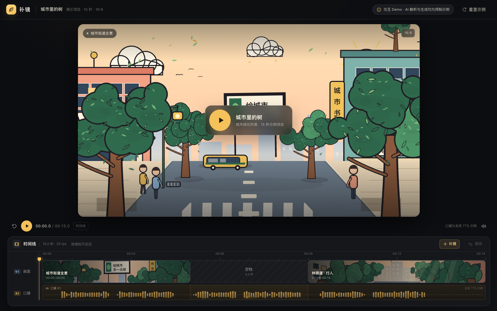
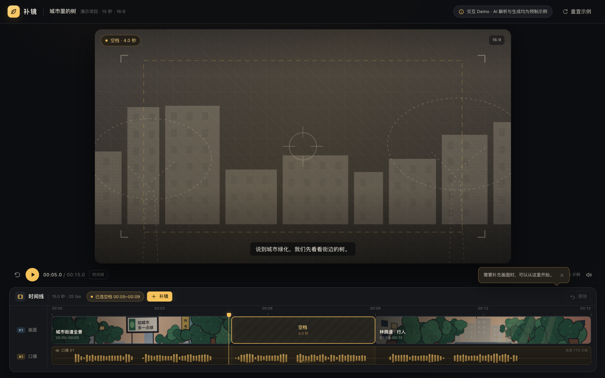
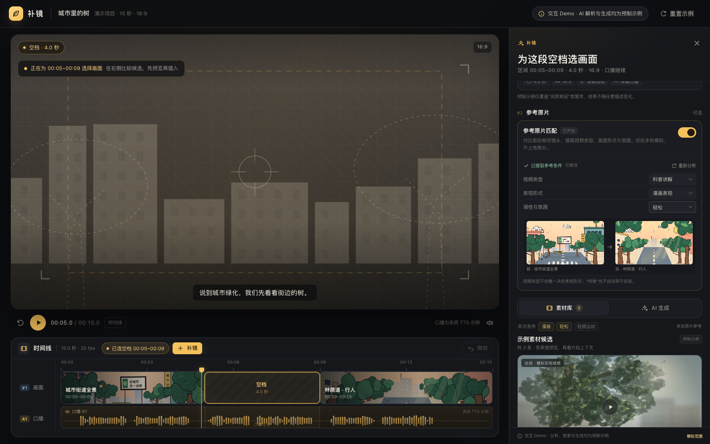
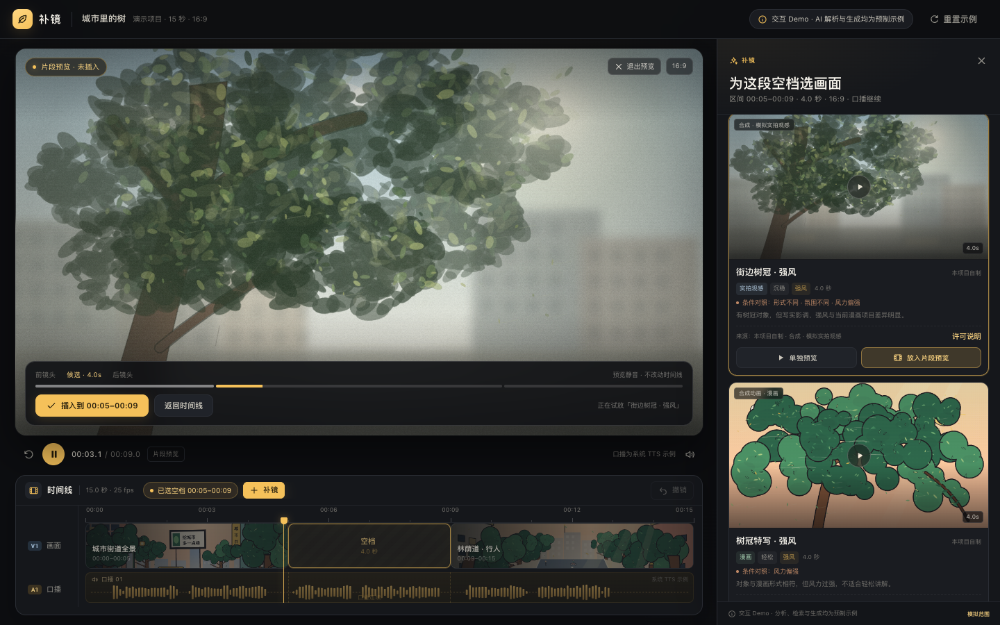
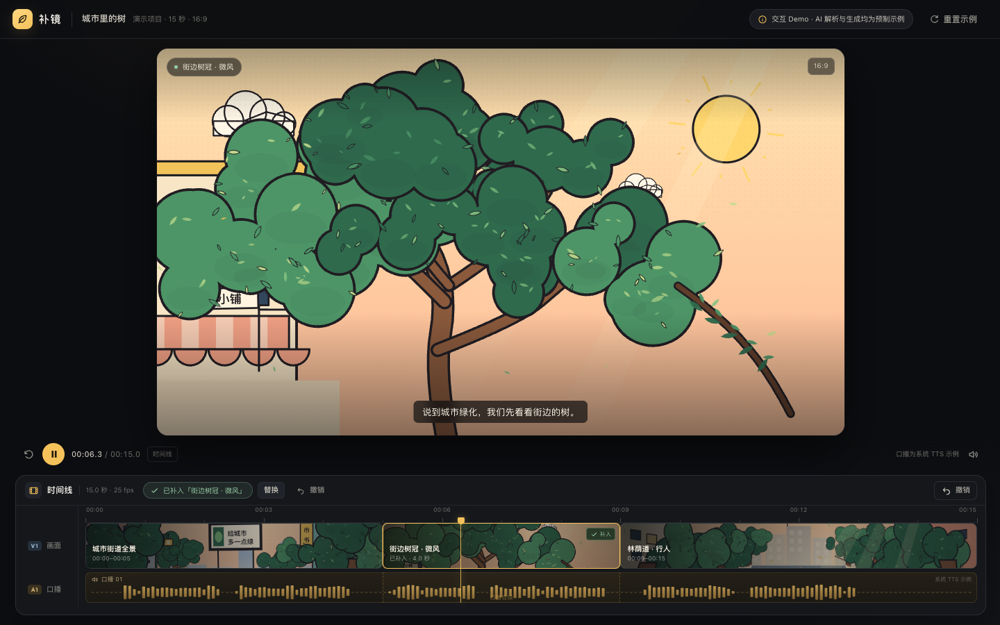
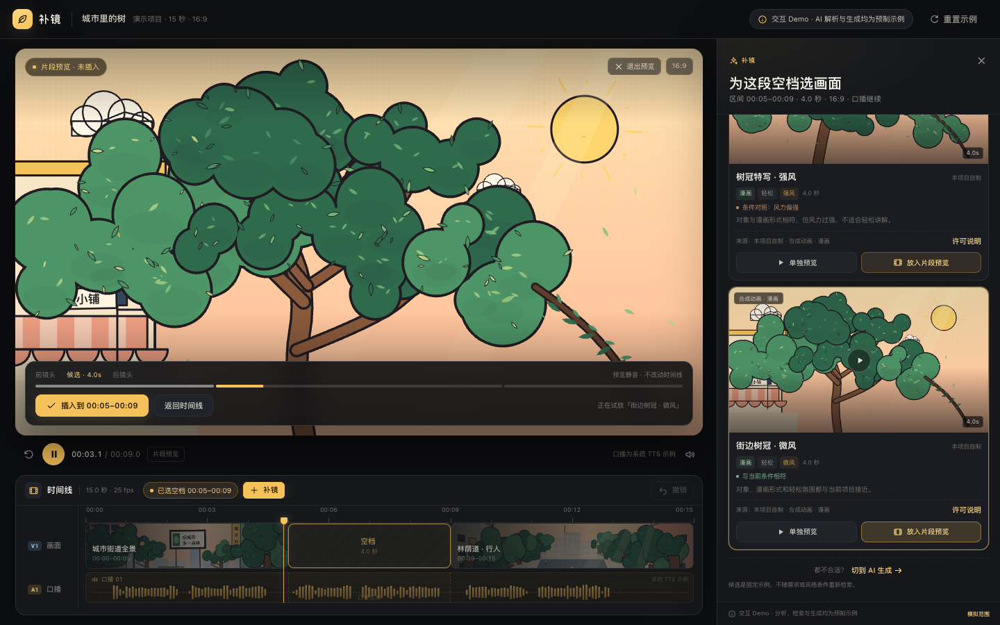

在剪辑时间线上，补一段“能用”的镜头。
帮助创作者在剪辑缺少辅助画面时，结合当前位置的内容需求与原片表达风格，检索已有素材或按需生成镜头，预览后补入时间线。
包括影视混剪、科普讲解等视频类型。已有创作意图和剪辑任务，但当前内容缺少合适的辅助画面。
共同需求： 找到或生成能接入原片的镜头。
本次示例： 漫画风城市科普，口播已完成；5–9 秒为空档。仅作演示案例，不代表产品只面向科普。
检索可能返回实拍、强风或不同画风。对象相符，但表现形式、情绪、运动或时长不合适，用户仍要反复筛选、生成、回时间线试用。
本次 Demo 只验证这条产品假设，不提供用户规模、节省时间或成功率数据。

位置、时长与前后镜头已经确定，不必重新描述上下文。
常见画面先复用素材；特殊表现再尝试生成，不让两者混为一谈。
候选先和前后镜头一起看；确认后才覆盖正式时间线。
需求、时长、画幅跟着区间走；两条来源共用同一组条件；候选先看上下文，再决定是否覆盖正式时间线。
在时间线调用“补镜”，选中 4.0 秒空档。需求、时长、画幅和连续口播从区间带入。
写下“风吹树冠，不要人物。”；提供同一句的示例入口，减少演示与输入成本。
开关默认关闭。开启后对比前后相邻镜头，得到可修改摘要：科普讲解 · 漫画表现 · 轻松。视频类型不会被硬性等同于某一种表现形式。
素材库候选显示来源、合成/实拍属性与许可入口；每条可单独预览。切到 AI 生成不会自动发起，点击生成才进入加载。
单独预览候选，或播放“前镜头 → 候选 → 后镜头”。预览不会改动正式时间线。
插入后更新 4 秒区间与主预览，口播保持连续；可撤销、可替换。生成失败保留需求和条件，可重试；支持一次“强风改微风”修改。




位置、时长和前后镜头已经确定。让用户从区间开始，系统就不必重新询问上下文，补入结果也能直接放回原片判断。
常见画面可以复用已有素材；特殊表现要求可以尝试生成。真实对象和事实性素材不应被随意生成替代，因此素材库优先保留，不宣称两者等价。
视频类型并不能唯一决定表现形式和氛围；“科普”也不自动等于实拍。系统可能判断错误，用户必须能纠正摘要，而不是被迫接受一次自动判断。
本次让用户明确指定缺口，控制误判与实现范围。全片扫描、自动成片与复杂时间轴编辑都不在 Demo 边界内。
保留“按当前视频表达风格匹配补充镜头”的能力，优先做好现有素材路径。生成是补充，不是唯一答案。
系统看起来理解了风格，结果放回上下文仍然不协调；生成等待与反复试错，可能超过用户自己找素材的成本。

用户能否选到愿意插入的镜头？需要修改几次？与原有找素材流程相比是否更省事？本材料不提供也未编造验证结果。
界面用简短摘要承载判断，不让用户填写完整参数表；每一项都可以被用户纠正。
| 层次 | 本次示例 | 对结果的影响 |
|---|---|---|
| 视频类型与表达目的 | 科普讲解 | 画面便于理解，不抢讲解重点。 |
| 视觉表现形式 | 漫画 | 优先漫画素材，或生成漫画画面。 |
| 调性与氛围 | 轻松 | 不用阴森、惊悚或强烈压迫的表现。 |
| 当前镜头用途 | 辅助讲述城市绿化 | 展示树冠，避免无关主体。 |
| 基本约束 | 四秒、项目比例、轻微运动 | 放进指定区间能使用。 |
“科普”不能自动等于“实拍”或某种固定风格；因此解析结果需要可修改、可关闭，关闭后不再用于新的请求。
说实话，我没有什么固定意义上的“最喜欢”。最近比较常用、也比较认可的是 ChatGPT 和 Codex 这一套，尤其是用 Codex 讨论方案、整理任务的过程。
准备笔试、面试和作业时，我一般已经有了一些想法，但还没想清楚哪些值得做、范围该收在哪里。这次笔试也是这样：我先提方向，和 Codex 来回讨论，再把确定下来的内容整理成说明，交给 Claude Code 实现。这种分工挺符合我的习惯——我更喜欢先把问题想清楚，再开始动手。
Codex 有个让我觉得挺舒服的设计：操作前会先说明准备做什么，完成后会给出文件位置和下一步操作。讨论几轮之后，我还能找到最终留下的东西，也知道接下来该怎么继续。过程提示和实际交付能对上，我比较容易跟上任务进度。
我也会拿同类工具作比较。以我的使用体验来说，Codex 的对话内容更符合我的需要；Claude Code 有时会先给出几个选项，让我更容易判断自己的偏好，这一点也挺值得借鉴。最近 ChatGPT 的聊天交互也让我觉得更顺手，所以我认可的是这套工具在讨论和操作上的整体体验。
不太满意的地方是，有时会卡顿、提示繁忙，回答质量偶尔也不太稳定。如果只能改一个地方，我希望先把等待和失败状态说清楚：任务到底还在继续，还是已经停了？需不需要我操作？重试时也尽量保留已有进度。等待本身可以接受，但我得知道继续等有没有意义，不然挺磨人的。
本产品内不调用真实模型或素材 API。AI 只用于产品梳理、工程实现与演示资源制作；预制结果不被描述为在线 AI 能力。
只覆盖“风吹树冠”4 秒示例。示例画面均由本项目 Canvas 程序动画制作；“实拍观感”候选刻意模拟写实画面，并非真实拍摄，也不代表素材库授权。口播与操作录屏旁白均由 macOS 系统 TTS 生成；“AI 生成”为预制程序动画，不是在线模型输出。当前 Demo 覆盖预制的“强风改微风”一次修改和可独立触发的失败状态。